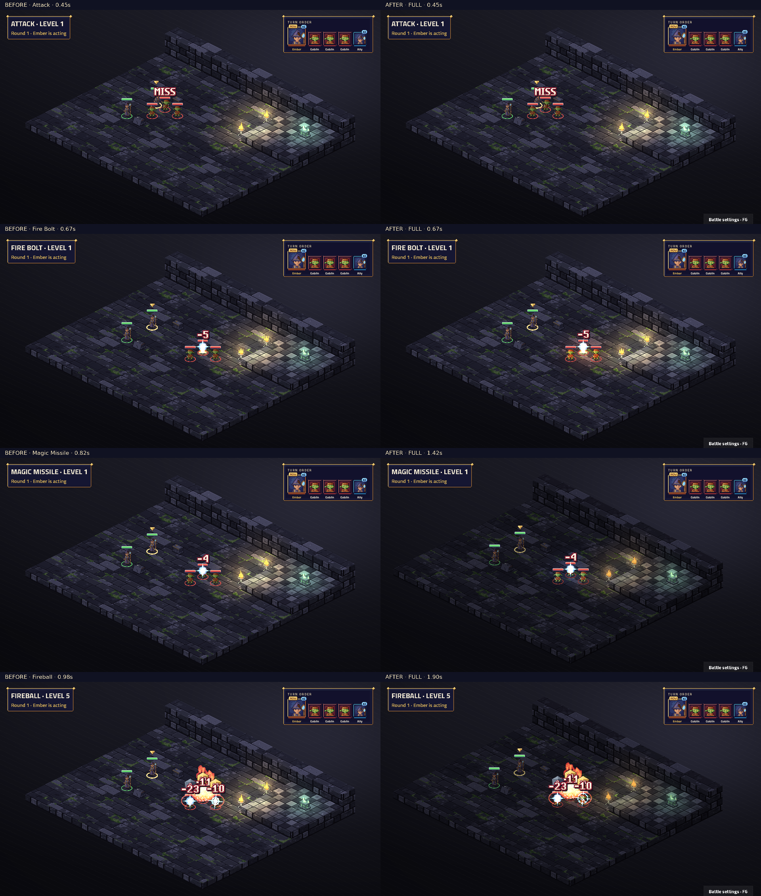

Attack · Level 1
Weapon attack, weapon range: weapon damage
Native TV capture: before on the left, after on the right. Fixed map and seed; real engine events and BeatPlayer. Videos preserve the complete cast, impact, effect tails and camera settle. Posters align the impact for comparison.
Frozen before: 9a7ffb54b6d8631aec394f3f32c98e006fb01b8b. No class art has been reworked in step 0. Review notes and limitations · Frame measurements · Actual beat timings

Weapon attack, weapon range: weapon damage
Spell attack, 6 tiles: 1d10 fire
6 tiles: 3 times: 1d4+1 force
Dex save, 6 tiles, burst 2: 6d6 fire; half damage on a save — Game balance: 6d6 per target instead of SRD 8d6.